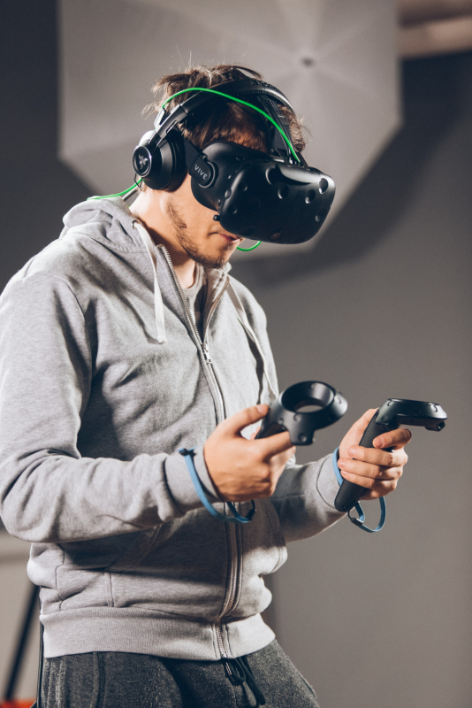
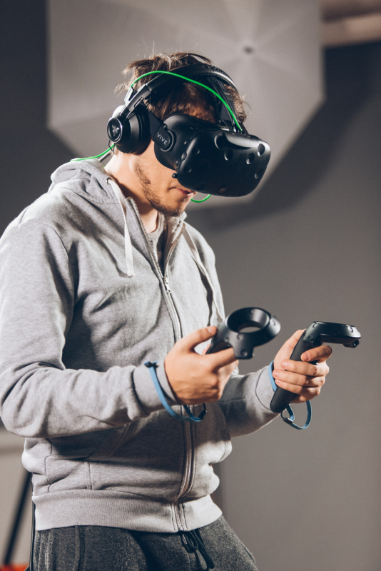

Apie virtualią realybę | Istorija | Technologijos | VR City - Virtualios erdvės
2020.10.29 09:54

Pagrindinis VR Pramogos Virtuali realybė jūsų namuose Virtualios realybės įrangos nuoma renginiams Švęsk gimtadienį virtualioje realybėje su VR City VR Žaidimai Vienkartinis apsilankymas Komandos VR „teambuilding’as“ virtualioje erdvėje Akcijos Naujienos Turnyrai Rekordai Rezervacija Apie VR Istorija Tendencijos Naujausios virtualios realybės tendencijos Virtualių erdvių vaizdai Parduotuvė HTC Vive Kat VR VR City suvenyrai VR City marškinėliai VR City džemperis Mano duomenys Shopping Cart 0 items - €0.00 0 Login or Register Virtuali erdvė | VR City Virtualios realybės žaidimų kambariai | įranga Pagrindinis VR Pramogos Virtuali realybė jūsų namuose Virtualios realybės įrangos nuoma renginiams Švęsk gimtadienį virtualioje realybėje su VR City VR Žaidimai Vienkartinis apsilankymas Komandos VR „teambuilding’as“ virtualioje erdvėje Akcijos Naujienos Turnyrai Rekordai Rezervacija Apie VR Istorija Tendencijos Naujausios virtualios realybės tendencijos Virtualių erdvių vaizdai Parduotuvė HTC Vive Kat VR VR City suvenyrai VR City marškinėliai VR City džemperis Mano duomenys
Virtualios realybės istorija
Šioje skiltyje mes apžvelgsime kaip vystėsi virtualios realybės technologijos bei kas buvo pagrindiniai pradininkai nutiesę virtualios realybės kelią, tokiu, kaip jį žinome šiandien.
Panoraminiai paveikslai
Ankstyvieji virtualios realybės bandymai
Jeigu į virtualią realybę žvelgtume lyg į sukurtą iliuziją, jog esame kažkur neegzistuojančioje vietoje, tuomet pirmaisiais virtualios realybės bandymais, neabejotinai, galima laikyti XIX a. 360 laipsnių freskas (ar panoraminius paveikslus). Šie paveikslai buvo pritaikyti taip, jog užpildytų visą žiūrovo regėjimą, tam, kad šis puikiai pajustų tam tikrą istorinį įvykį ar sceną.
Stereoskopinės nuotraukos
„View-Master“ (patentuotas 1939 m.) stereoskopas
1838 m. Charles Wheatstone tyrimas parodė, kad smegenys įvairius dvimačius vaizdus iš kiekvienos akies apdoroja į vieną trijų dimensijų objektą. Tai reiškia, jog dviejų greta esančių stereoskopinių paveikslėlių ar nuotraukų peržiūra per stereoskopą suteikia žiūrovui gilumo ir panirimo jausmą. Vėlesnis žymus „View-Master“ (patentuotas 1939 m.) stereoskopas buvo naudojamas „virtualiam turizmui“. „Stereoskopo“ dizaino principai šiandien taip pat yra naudojami populiariems VR realybės akiniams „Google Cardboard“ bei taikomi mažo biudžeto mobiliųjų telefonų VR ekranams.
„Link Trainer“ – pirmasis skrydžio stimuliatorius, 1929 m.
1929 m. Edward Link sukūrė „Link trainer“ (patentuotas 1931 m.) – tikriausiai pirmąjį komercinio skrydžio treniruoklio pavyzdį, kuris buvo visiškai elektromechaninis. Tai buvo nedidelis variklio varomas mechanizmas imituojantis turbulenciją ir kitus įvairius sutrikimus. Poreikis saugesniais būdais mokyti pilotus buvo toks didelis, kad JAV kariuomenė nusipirko šiuos šešis įrenginius už 3500 dolerių. Pagal 2015 m. pinigų vertę jų kaina būtų buvusi lygi 50 000 dolerių. Antrojo pasaulinio karo metu daugiau kaip 500 000 „mėlynųjų dėžučių“ “Link trainers“ buvo naudojami daugiau nei 500 000 pilotų pradiniams mokymams bei jų įgūdžių tobulinimui.
1930-tieji metai – mokslinės fantastikos istorija numatė VR
1930-aisiais mokslinės fantastikos rašytojo Stanley G. Weinbaum („Pygmalion’s Spectacles“) istorijoje pateikiama akinių idėja, leidžianti dėvėtojui patirti išgalvotą pasaulį per holografiją, kvapą, skonį ir prisilietimą. Žvelgiant į tai, patirtis, kurią Weinbaum apibūdina, tiems, kurie dėvi apsauginius akinius, yra neišvengiamai panaši į šiuolaikišką ir naująją virtualios realybės patirtį, todėl rašytoją galima vadinti VR vizionieriumi.
Mortonas Heiligas „Sensorama“ | Interviu
1950 m. Viduryje kinematografas Mortonas Heiligas sukūrė „Sensorama“ (patentuotas 1962 m.) – arcade stiliaus teatro kabinetą, skatinantį visus žmogaus jausmus, ne tik regą ir klausą. Jame buvo įrengti stereo garsiakalbiai, stereoskopinis 3D ekranas, ventiliatoriai, kvapo generatoriai ir vibruojanti kėdė. „Sensorama“ buvo siekiama visiškai panardinti asmenį į filmą. Mortonas Heiligas savo išradimui taip pat sukūrė šešis trumpus filmus, kur viską fotografo, montavo ir redagavo pats. „Sensorama“ filmai buvo pavadinti „Motorcycle“, „Belly Dancer“, „Dune Buggy“, „Helicopter“, „A date with Sabina“ ir „I’m a coca cola bottle!“.
1960-tieji metai - pirmasis VR montuojamas ekranas
Kitas Mortono Heiligo išradimas buvo “Telesphere Mask“ (patentuotas 1960 m.), kuris yra laikomas pirmuoju ant galvos montuojamo ekrano (HMD) pavyzdžiu, tačiau neinteraktyvaus kino laikmenoje ir be judesio sekimo. Ši „kaukė“ užtikrino stereoskopinį 3D plataus matymo vaizdą bei stereofoninį garsą.
1961 „Headsight“ - pirmasis HMD judesio sekimas
1961 m. Du "Philco Corporation" inžinieriai ("Comeau & Bryan") sukūrė pirmąjį HMD prekursorių, šiandien žinomą kaip "Headsight". Jame buvo įmontuoti vaizdo ekranai kiekvienai akiai ir magnetinio judesio sekimo sistema, kuri buvo susijusi su uždarosios grandinės kamera. "Headsight" iš tikrųjų nebuvo sukurtas virtualios realybės programoms (toks terminas tuomet dar neegzistavo) – „Headsight“ buvo pritaikytas naudojimui kariuomenėje, tam, kad būtų galima žiūrėti į pavojingas situacijas nuotoliniu būdu. Galvos judesiai dėvint „Headsigh“ perkeldavo nuotolinę kamerą, leidžiančią vartotojui natūraliai apžiūrėti aplinką. "Headsight" buvo pirmas žingsnis VR galvos montuojamo ekrano evoliucijoje, tačiau trūko kompiuterių ir vaizdo generavimo integracijos.
1965-tieji metai - Ivano Sutherlando ekranas „The Ultimate“
Ivanas Sutherlandas "Ultimate Display" koncepciją apibūdino kaip galinčią simuliuoti tikrovę ta prasme, kuomet negalima suprasti skirtumo nuo realios realybės. Pasak autoriaus, šiam tikslui pasiekti būtinos sąlygos yra:
● Kompiuterinė įranga virtualaus pasaulio sukūrimui ir jos peržiūrai realiu laiku;
● Gebėjimas vartotojams realiai bendrauti su objektais virtualiame pasaulyje;
● Virtualus pasaulis peržiūrėtas per HMD turi atrodyti lyg realus per papildytą 3D garsą ir lytėjimą.
Šios Ivano Sutherlando apibrėžtos sąlygos ir yra laikomos vienomis pagrindinių apibrėžiant virtualią realybę tokia, kokia ją žinome šiandien.
1968-tieji metai - „Damoklio“ kardas
1968 m. Ivanas Sutherlandas ir jo mokinys Bobas Sproullas sukūrė pirmąjį "VR / AR" montuotą ekraną (Damoklio kardą), kuris buvo prijungtas prie kompiuterio, o ne prie fotoaparato. Tai buvo didžiulė ir bauginanti konstrukcija pakabinama nuo lubų, kuri vartotojui buvo pernelyg sunki, jog būtų patogiai dėvima. Vartotojas naudodamas Damoklio kardą būdavo tarsi įkalintas visose konstrukcijose. Taip pat visa kompiuteriu sukurta grafika buvo labai primityvi – tik karkaso kambariai ir objektai.
1969-tieji metai - Dirbtinė realybė
1969 m. virtualios realybės kompiuterių menininkas Myron Kruegere sukūrė patirties seriją, pavadintą "dirbtine realybe", kuria sukūrė kompiuterinę aplinką, reaguojančia į žmones esančius joje. Projektai pavadinimu GLOWFLOW, METAPLAY ir PSYCHIC SPACE buvo jo moksliniai tyrimai, kurie galiausiai paskatino VIDEOPLACE technologijos plėtrą. Ši technologija leido žmonėms bendrauti tarpusavyje reaguojančioje kompiuterio sukurtoje aplinkoje netgi nutolus vieniems nuo kitų.
1987-tieji metai - „VR“ pavadinimo atsiradimas
Net ir po anksčiau minėtų virtualios realybės vystymųsi vis dar nebuvo visapusės sąvokos viskam apibūdinti. Viskas pasikeitė 1987 m., kai vizualinio programavimo laboratorijos (VPL) įkūrėjas Jaron Lanier sukūrė (arba išpopuliarino) sąvoką "virtuali realybė". Nuo šiol virtualios realybės tyrimo sritis įgijo pavadinimą „VR“. Savo kompanijos VPL tyrime Jaron taip pat sukūrė keletą virtualios realybės įrangos, įskaitant "Dataglove" (kartu su Tom Zimmerman) ir "EyePhone" montuojamą ekraną. Tai buvo pirmoji bendrovė, kuri pardavė "Virtual Reality" akinius ("EyePhone" 1 9400 JAV dolerių, "EyePhone HRX 49 000") ir pirštines (9000 JAV dolerių).
1991-tieji metai - virtualios grupės arkados mašinos
Galiausiai atsiranda visuomenei prienami virtualios realybės įrenginiai, tačiau kalbėti apie VR įrangą kaip apie lengvai įgyjamą „nuosavybę“ dar anksti. "Virtuality Group" sukuria keletą arkadinių žaidimų bei mašinų. Besinaudojantys žaidimų aparatais turi dėvėti "VR" akinių rinkinį, tam, jog galėtų realiu laiku pasinerti į stereoskopinius 3D vaizdus. Taip pat atsiranda galimybė sujungti žaidžiančius į vieną tinklą ir tuo pačiu išbandyti multi-player žaidimų patirtis.
1992-tieji metai - filmas „The Lawnmower Man“
Filmas „The Lawnmower Man“ pristatė virtualios realybės koncepciją platesnei auditorijai. Filmas buvo iš dalies pagrįstas "Virtual Reality" įkūrėjo Jaron Lanier idėjomis bei jo ankstyvaisiais VR tyrimais. Jaroną filme įkūnijo Pierce Brosnan, mokslininkė, gydanti protiškai neįgalius pacientus virtualios realybės terapija. Filme režisierius Brettas Leonardas iš panaudojo tikrą VR įrangą, gautą iš VPL (Virtual Programming Lab) tyrimų laboratorijų.
1993-tieji metai - „SEGA“ pristato naujus „VR“ akinius
1993 m. "Consumer Electronics" parodoje buvo pristatyti nauji „Sega“ VR akiniai, pritaikyti “Sega Genesis" konsolei. "Prototype" akiniai turėjo galvos pozicijos nustatymo ekrano atžvilgiu funkciją (head tracking), stereogarsą bei LCD ekranus. "Sega" ketino pardavinėti akinius už maždaug 200 JAV dolerių arba apie 322 dolerius pagal 2015 m. valiutos kurso vertę. Tačiau techninio vystymosi sunkumai lėmė tai, kad įrenginys visam laikui ir išliks prototipo etape, nepaisant to, kad buvo sukurti keturi šio gaminio žaidimai. Tai buvo didžiulė nesėkmė "Sega" įmonei.
1995-tieji metai - „Nintendo Virtual Boy“
"Nintendo" virtualus berniukas (dar žinomas kaip "VR-32") - tai 3D žaidimų konsolė, kuri buvo šlovinama kaip pirmoji nešiojamoji konsolė, galinti rodyti tikrą 3D grafiką. Ji pirmą kartą buvo išleista Japonijoje bei Šiaurės Amerikoje ir kainavo 180 dolerių tačiau, netgi nepaisant vėlesnio kainos sumažėjimo, patyrė komercinę nesėkmę. Šios nesėkmės priežastis buvo spalvų trūkumas grafikoje (žaidimai buvo tik raudonos ir juodos spalvos), trūko programinės įrangos palaikymo ir buvo sudėtinga naudoti konsolę patogioje padėtyje. Sekančiais akinių gamyba ir pardavimai buvo nutraukti.
1999-tieji metai - filmas „Matrica“
1999 m. filmas "The Matrix" pasiekia teatrus. Filme veikėjai gyvena visiškai modeliuojamame pasaulyje, daugelis iš jų net nenumano, jog negyvena realiame pasaulyje. Nors prieš tai kai kurie ankstesni filmai taip pat turėjo apibendrintą virtualios realybės vaizdavimą, pavyzdžiui, 1982 m. "Tron" ir 1992 m. "Lawnmower Man", filmas "The Matrix" turėjo didžiausios įtakos imituojamos realybės iškėlimui į pagrindinį planą.
Virtuali realybė XXI amžiuje
XXIa. pastebima didelė, sparti pažanga kuriant virtualią realybę. Kompiuterinės technologijos, ypač mažos ir galingos mobiliosios technologijos tiesiog klesti, o kainos nuolat mažėja. Išmaniųjų telefonų su didelio tankio ekranais ir 3D grafika galimybių augimas leido sukurti lengvus ir praktiškus virtualios realybės prietaisus. Vaizdo žaidimų pramonė ir toliau skatino vartotojų virtualiosios realybės vystymąsi. Fotoaparatų jutiklių komplektai, judesio reguliatoriai ir natūralios žmogaus sąsajos jau yra kasdienių žmonių skaičiavimo užduočių dalis. Neseniai tokios kompanijos kaip "Google" išleido tarpines virtualios realybės prekes, tokias kaip "Google" kortelę, "pasidaryk pats" ausines, kurios naudoja išmanųjį telefoną. Tokios kompanijos kaip "Samsung" šią koncepciją taip pat pritaikė tokiems produktams kaip "Mass-produced" "Galaxy Gear", kuriuose yra "išmaniųjų" funkcijų, tokių kaip gesto valdymas.
Galutinių vartotojų produktų kūrėjų versijos taip pat buvo prieinamos keletą metų, todėl buvo nuolatinis programinės įrangos projektų srautas, sukuriamas turinys, skirtas imanentiniam šiuolaikinės virtualios realybės patekimui į rinką.
Atrodo aišku, kad 2016 m. Virtualios realybės pramonėje bus svarbūs metai. Tuo metu rinkoje pasirodys keletas vartotojų prietaisų, kurie atrodo, kad galiausiai atsakys į neįvykdytus virtualios realybės pažadus devintajame dešimtmetyje. Tai apima novatorišką "Oculus Rift", kurią 2014 m. Socialinės žiniasklaidos milžinė "Facebook" įsigijo už 2 bilijonus dolerių. Neįtikėtinas pasitikėjimas industrija, kuria pramonės atstovai ketina eiti. "Oculus Rift" išleistas 2016 m., varžysis su "Valve" korporacijos ir "HTC", "Microsoft" ir "Sony Computer Entertainment" produktais. Šios įtakingos kompanijos tikrai bus sekamos kitų įmonių, jeigu rinka kils taip, kaip yra tikimasi.
Paieška
Žymės
Akcijos naujienos rekordai renginiai turnyrai varžybosPrisijungti su Facebook
Patirk naują pasaulį virtualios realybės patirčių kambaryje Saulėtekyje esančiame studentų miestelyje | Saulėtekio al. 41, Vilnius
Taisyklės
Apmokėjimo būdai
Privatumo politika
Prekių ir paslaugų teikimo sąlygos
Virtualios erdvės naudojimosi taisyklės ir sąlygos
Meniu
Darbo pasiūlymai
Skelbimai
Verslui
Apie įmonę
Mano duomenys
Kontaktai
Saulėtekio al. 41, Vilnius
+370 600 202 36
info@vrcity.lt
Darbo laikas * :
I - VI: 10-23 val.
VII: 11-23 val.
( * - prieš atvykstant yra būtina išankstinė rezervacija ).
vrcity.lt © 2018. Vardas „VR City“ bei interneto svetainė www.vrcity.lt priklauso įmonei UAB „Anvus“.
Login Register or you can login using your favorite social profile!- VIRTUALIOS REALYBĖS PRAMOGA - VR SPOT
- Virtualios realybes įranga Archives - Virtuali erdvė | VR City
- Virtualios Realybės Įranga - TTAISYKLA
- VRERDVĖ.LT - Virtualios Realybės Pramogos Kaune
- Interaktyvi virtualios realybės kelionė po Čiurlionio ...
- Interaktyvi virtualios realybės instaliacija „Angelų takais“
- Virtualios realybės šalmas ps4: peržiūri, kaip prisijungti ...
- Virtualios realybės (VR) įranga internetu – TECHNORAMA
- Virtualios realybės istorija - VR City
- VIRTUALIOS REALYBĖS AKINIAI (VR) virš 50 modelių Žema ...
- VIRTUALIOS REALYBĖS PRAMOGA - VR SPOT
Maža to, dabar virtualios realybės akiniai nereikalauja didelių finansinių investicijų, nes įsigyti šį įrenginį galima už mažiau nei 15 €. Siūlome patikimų gamintojų kokybiškus virtualios realybės akinius. Čia rasite Samsung, Sponge, Esperanza, Modecom ir kitų prekės ženklų virtualios realybės akinių modelius.
- Virtualios realybes įranga Archives - Virtuali erdvė | VR City
Palygink skirtingų parduotuvių kainas Nuo 10.00 € Virtualios realybės įranga Akcijos, atsiliepimai.
- Virtualios Realybės Įranga - TTAISYKLA
Pasinerkite į virtualų pasaulį. Virtualios realybės (VR) įrangos komplektai kompiuteriams, žaidimų konsolėms ir mobiliesiems įrenginiams. Geros kainos!
- VRERDVĖ.LT - Virtualios Realybės Pramogos Kaune
Virtualios realybės akinių nuoma renginiams, konferencijoms, šventėms. Išsinuomokite virtualios realybės akinius su reikiama įranga ir virtualios realybės žaidimais Vilniuje. Galėsite išandyti įvairaus pobūdžio žaidimų bei kitų VR patirčių. Nuomojami HTC Vive virtualios realybės akiniai.
- Interaktyvi virtualios realybės kelionė po Čiurlionio ...
Virtualios realybės įranga galima naudotis nuo 12 m. Bilieto kaina 10 eurų. Moksleiviams, studentams ir senjorams taikoma 50% nuolaida. Asmenys virš 80 m. amžiaus ir neįgalieji leidžiami nemokamai. Filmo trukmė - 20 min. Seansai vyksta kas pusvalandį.
- Interaktyvi virtualios realybės instaliacija „Angelų takais“
Atrodo aišku, kad 2016 m. Virtualios realybės pramonėje bus svarbūs metai. Tuo metu rinkoje pasirodys keletas vartotojų prietaisų, kurie atrodo, kad galiausiai atsakys į neįvykdytus virtualios realybės pažadus devintajame dešimtmetyje. Tai apima novatorišką "Oculus Rift", kurią 2014 m.
- Virtualios realybės šalmas ps4: peržiūri, kaip prisijungti ...
Pradžia / Virtualios realybes įranga ... Patirk naują pasaulį virtualios realybės patirčių kambaryje Saulėtekyje esančiame studentų miestelyje | Saulėtekio al. 41, Vilnius. Taisyklės. Apmokėjimo būdai. Privatumo politika. Prekių ir paslaugų teikimo sąlygos.
- Virtualios realybės (VR) įranga internetu – TECHNORAMA
Instaliaciją sudaro keturios virtualios realybės įrangos stotelės, vienu metu viena stotele gali naudotis vienas žmogus. Filmo trukmė 20 min. Seansai vyksta kas pusvalandį. Virtualios realybės įranga galima naudotis nuo 12 m. Bilieto kaina 10 eurų. Moksleiviams, studentams ir senjorams taikoma 50% nuolaida.
- Virtualios realybės istorija - VR City
Virtualios Realybės Įranga. 3D Virtualios realybės akiniai VR BOX 2.0. Tinka 3D žaidimams ir filmams, palaiko Android ir Apple iOS platformas. Skirtas įrenginiams su 4,5 - 6 colių ekranais. Platesnis nei įprasta matymo kampas (95 - 100°). Akiniuose įmontuota daug pažangių funkcijų, tokių kaip greitas telefono montavimo rėmelis ...
- VIRTUALIOS REALYBĖS AKINIAI (VR) virš 50 modelių Žema ...
Virtualios realybės įranga į namus. ... Virtualios realybės nuotykius galite patirti atvykę į mūsų virtualų kambarį, kuris yra pirmasis ir didžiausias Klaipėdoje, arba užsisakyti visą įrangą į savo namus ar kitą pasirinktą šventęs vietą. Įrangos nuoma parai.
Maža to, dabar virtualios realybės akiniai nereikalauja didelių finansinių investicijų, nes įsigyti šį įrenginį galima už mažiau nei 15 €. Siūlome patikimų gamintojų kokybiškus virtualios realybės akinius. Čia rasite Samsung, Sponge, Esperanza, Modecom ir kitų prekės ženklų virtualios realybės akinių modelius.
Palygink skirtingų parduotuvių kainas Nuo 10.00 € Virtualios realybės įranga Akcijos, atsiliepimai.
Pasinerkite į virtualų pasaulį. Virtualios realybės (VR) įrangos komplektai kompiuteriams, žaidimų konsolėms ir mobiliesiems įrenginiams. Geros kainos!
Virtualios realybės akinių nuoma renginiams, konferencijoms, šventėms. Išsinuomokite virtualios realybės akinius su reikiama įranga ir virtualios realybės žaidimais Vilniuje. Galėsite išandyti įvairaus pobūdžio žaidimų bei kitų VR patirčių. Nuomojami HTC Vive virtualios realybės akiniai.
Virtualios realybės įranga galima naudotis nuo 12 m. Bilieto kaina 10 eurų. Moksleiviams, studentams ir senjorams taikoma 50% nuolaida. Asmenys virš 80 m. amžiaus ir neįgalieji leidžiami nemokamai. Filmo trukmė - 20 min. Seansai vyksta kas pusvalandį.
Atrodo aišku, kad 2016 m. Virtualios realybės pramonėje bus svarbūs metai. Tuo metu rinkoje pasirodys keletas vartotojų prietaisų, kurie atrodo, kad galiausiai atsakys į neįvykdytus virtualios realybės pažadus devintajame dešimtmetyje. Tai apima novatorišką "Oculus Rift", kurią 2014 m.
Pradžia / Virtualios realybes įranga ... Patirk naują pasaulį virtualios realybės patirčių kambaryje Saulėtekyje esančiame studentų miestelyje | Saulėtekio al. 41, Vilnius. Taisyklės. Apmokėjimo būdai. Privatumo politika. Prekių ir paslaugų teikimo sąlygos.
Instaliaciją sudaro keturios virtualios realybės įrangos stotelės, vienu metu viena stotele gali naudotis vienas žmogus. Filmo trukmė 20 min. Seansai vyksta kas pusvalandį. Virtualios realybės įranga galima naudotis nuo 12 m. Bilieto kaina 10 eurų. Moksleiviams, studentams ir senjorams taikoma 50% nuolaida.
Virtualios Realybės Įranga. 3D Virtualios realybės akiniai VR BOX 2.0. Tinka 3D žaidimams ir filmams, palaiko Android ir Apple iOS platformas. Skirtas įrenginiams su 4,5 - 6 colių ekranais. Platesnis nei įprasta matymo kampas (95 - 100°). Akiniuose įmontuota daug pažangių funkcijų, tokių kaip greitas telefono montavimo rėmelis ...
Virtualios realybės įranga į namus. ... Virtualios realybės nuotykius galite patirti atvykę į mūsų virtualų kambarį, kuris yra pirmasis ir didžiausias Klaipėdoje, arba užsisakyti visą įrangą į savo namus ar kitą pasirinktą šventęs vietą. Įrangos nuoma parai.

 
